에이전트가 못 읽는 이유와 Agent Reach
영상은 흔한 실패 장면으로 시작해요. 클로드 코드에 X 링크를 주고 분석하라고 해도 읽지 못하는 경우가 많아요. 화자는 일부러 그러는 게 아니라 원래 할 수 없는 일이라고 짚어요.
한 가지 우회로는 실행할 때 파라미터를 하나 붙이는 거예요. 아래 슬라이드의 claude --chrome이 그 모습이에요. 오른쪽 스위치처럼 브라우저 도구가 켜지면 X 글을 직접 볼 수 있어요.
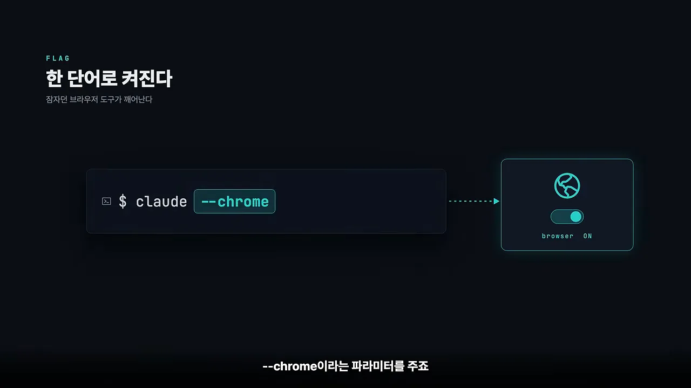
'모든 글을 학습했으니 아는 거 아니야?'라는 생각에 화자는 직접 물어보라고 해요. 입력창의 what's trending on X right now?가 그 시험이에요. 대부분 정보에 접근할 수 없다고 답하는데, 학습이 끝난 시점에서 시간이 멈춰 있기 때문이에요.
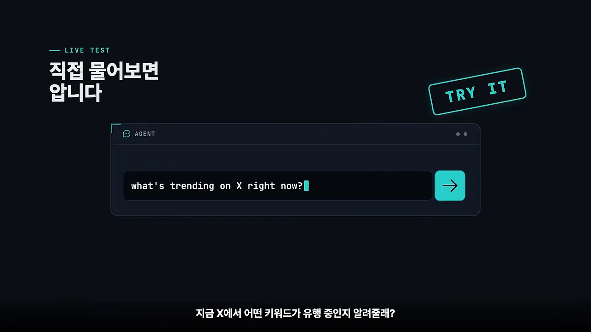
심부름은 결국 사람 몫이에요
아이디어를 조사시키면 레딧이나 X에 갈 수 없으니 사람이 브라우저를 열고 검색하고 복사해서 다시 붙여요. 슬라이드 왼쪽에서 쉬는 뇌와 오른쪽에서 짐을 나르는 사람이 이 역전을 그려요.
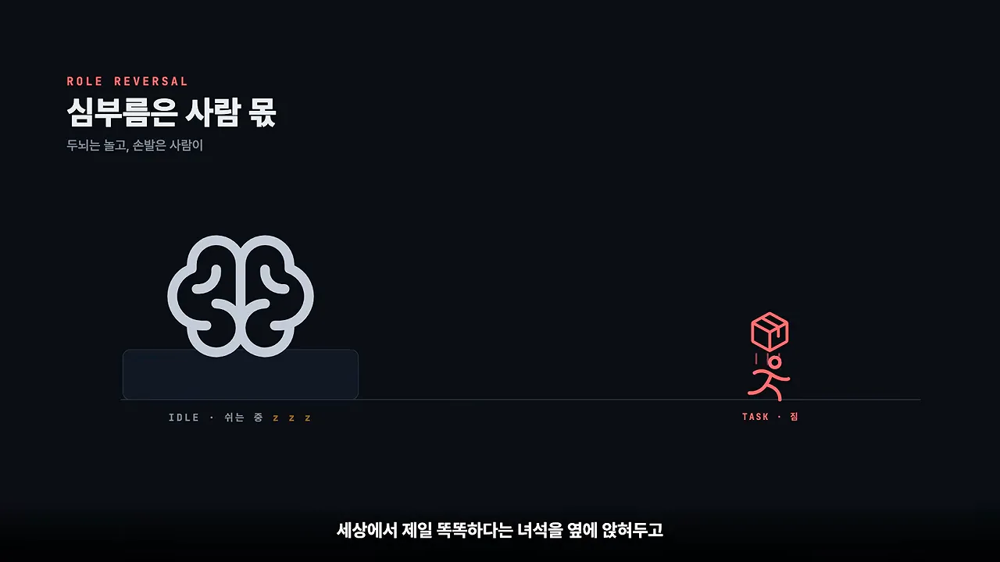
제대로 연결하는 보통 방법은 채널마다 API 키를 받는 거예요. 카드를 등록해 결제하고, 사용량 제한을 맞고, 플랫폼마다 다른 사용법을 익혀야 해요. 아래 카드 세 장의 빨간 막대가 채널별 사용량 제한이고, 사이의 X 표시는 서로 이어지지 않는다는 뜻이에요.
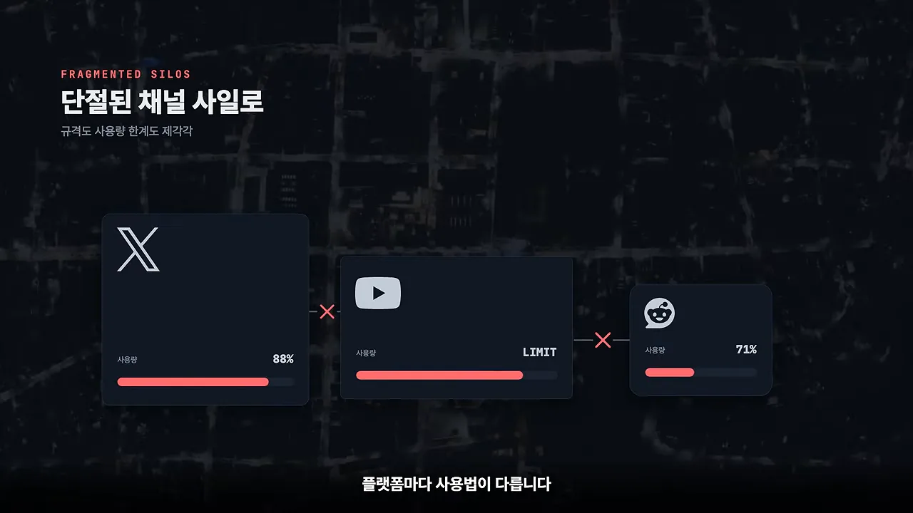
Agent Reach가 푸는 방식
Agent Reach는 파이썬 패키지 하나로 이 문제를 묶어요. 가운데 agent-reach 허브에서 뻗어 나간 아이콘들이 X, 유튜브, 레딧, 깃허브, 일반 웹 같은 채널이고, 왼쪽 위 숫자 '14+'가 화자가 말한 채널 수예요.
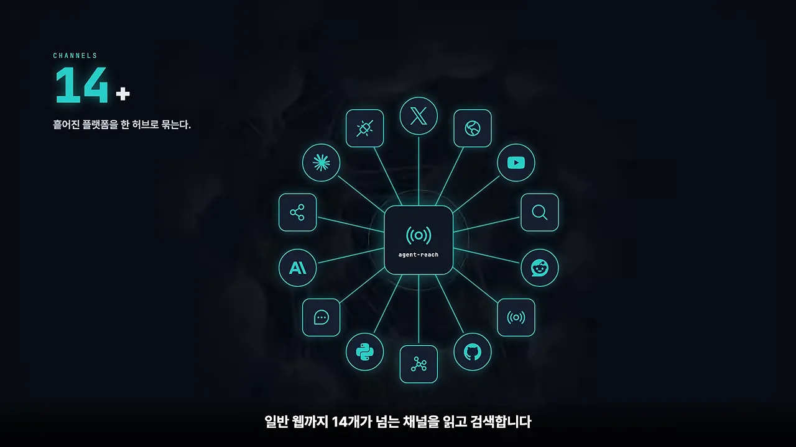
화자가 재미있다고 꼽는 개념은 셀프 힐링 라우터예요. 슬라이드의 'RE-ROUTE()'처럼 통로 1이 막히면 신호가 갈라져 통로 2로 가요. X가 막으면 다른 길로 간다는 얘기예요.
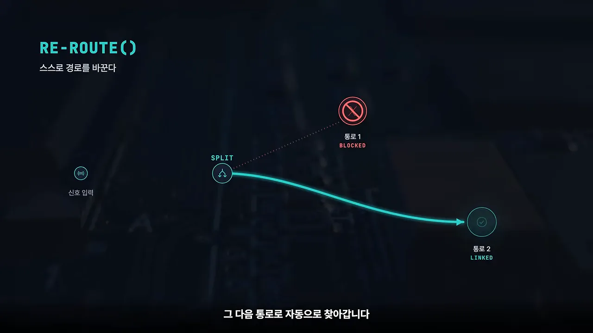
화자는 처음에 '별 4만 개를 받았다, 5만 개 찍기 전에 북마크하라'는 문구를 보고 한 발 물러났다고 해요. 그런데 깔아 보고 생각이 바뀌었대요.
마케팅은 거품이어도 물건은 진짜더라고요.
— 영상 02:15
설치와 인증: 한 줄 뒤에 남는 일
설치에는 두 길이 있어요. 하나는 명령어를 직접 치는 길이고, 다른 하나는 설치 안내 문서 주소를 클로드 코드에 던지는 길이에요. 화자는 둘 다 해 봤고 다 잘 됐다고 해요. 아래 화면 맨 위 줄과 자막의 pip install agent-reach가 첫째 길이에요.
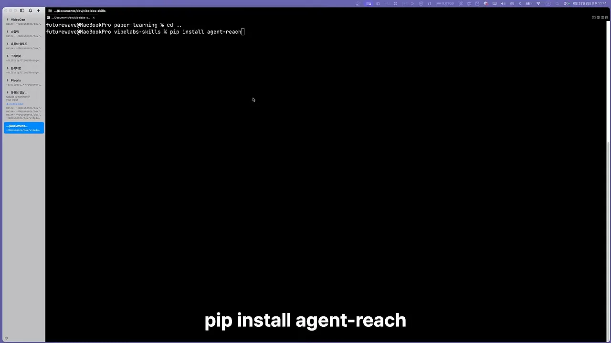
클로드 코드에 맡기는 길
데모는 둘째 길로 가요. 터미널 맨 위 줄을 보면 claude 뒤에 플래그가 두 개 붙어 있어요. 화자가 설명하는 건 크롬을 쓰기 위한 --chrome이에요. 그 앞의 --dangerously-skip-permissions는 영상에서 따로 언급하지 않아요.
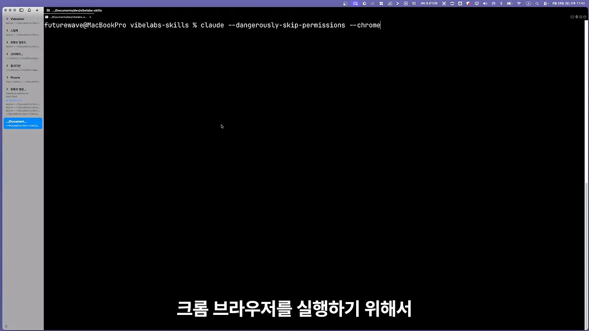
실행하고 나면 저장소 주소와 함께 한 문장을 보내요. 아래쪽 입력창의 이 레포를 클론하고 설치까지 해줘.가 전부예요.
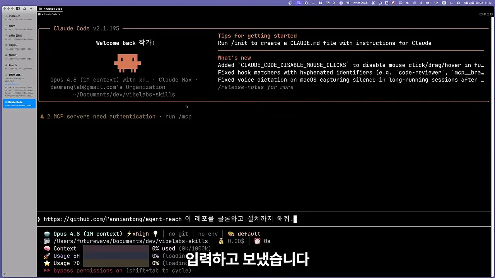
그다음은 클로드 코드가 알아서 진행해요. 화면 위에서 아래로 읽으면 클론, CLAUDE.md 읽기, README 확인, 파이썬 환경 확인 순서예요.
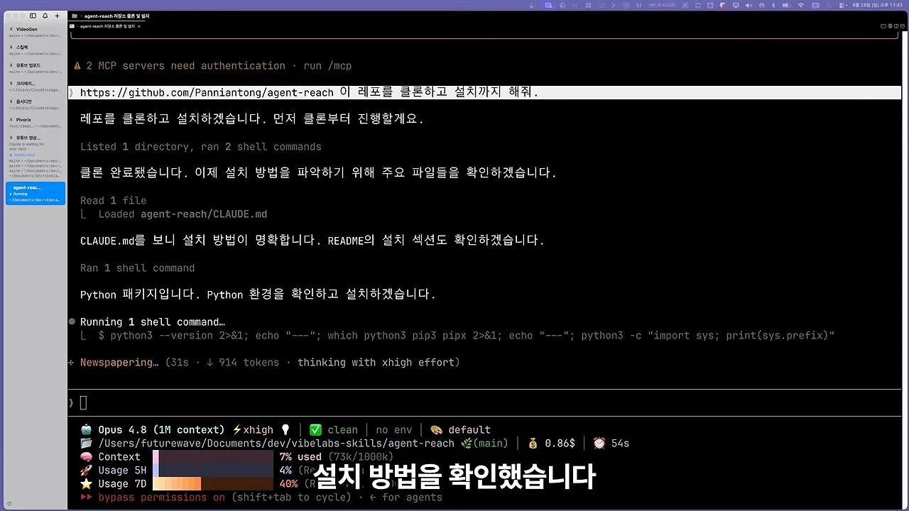
Homebrew Python 3.14는 externally-managed 환경이라 프로젝트 안에 .venv를 만들고 editable 설치를 했어요. 아래 화면 윗부분의 현재 6/13 채널 즉시 사용 가능 줄이 진단 결과예요. 스킬도 ~/.claude/skills/agent-reach를 포함해 두 곳에 저절로 등록됐어요.
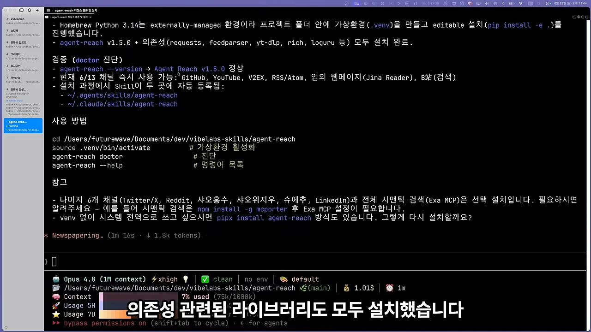
전체 설치 뒤에도 남는 일
화자는 '전체 모두 설치해 줘'라고 입력해요. 중간에 운영 체제 암호를 물을 수 있으니 그때는 직접 넣으라고 해요. 끝나면 표가 나와요. 왼쪽 열이 설정 없이 쓰는 6개, 오른쪽 열이 도구 설치로 추가된 3개라 합쳐서 9/13이에요.
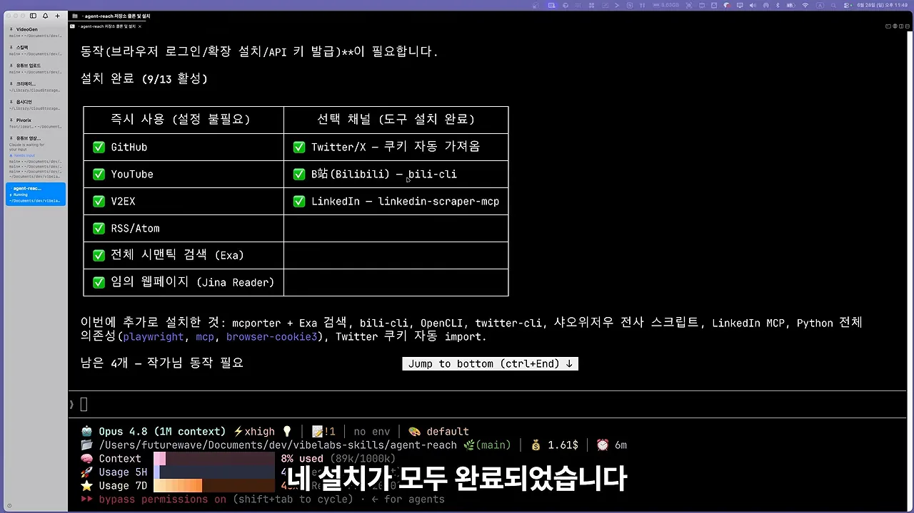
남은 4개는 사람이 해야 하는 일로 정리돼요. 아래 화면의 번호 목록을 표로 옮기면 이렇게 돼요.
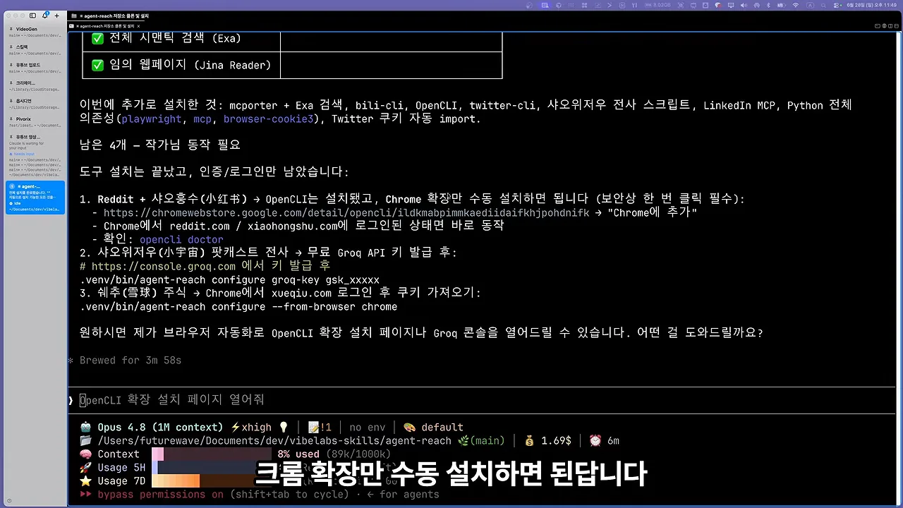
| 채널 | 필요한 일 | 영상에서 한 일 |
|---|---|---|
| Reddit, 샤오훙수 | OpenCLI Chrome 확장을 수동 설치하고, 사이트에 로그인해 두기 | 확장만 추가 |
| 샤오위저우 | 팟캐스트 전사용 Groq API 키 발급 | 건너뜀 |
| 쉐추 | Chrome에서 로그인 후 쿠키 가져오기 | 건너뜀 |
화자는 이 가운데 OpenCLI 확장만 설치해요. 터미널 위에 뜬 크롬 웹 스토어 창의 OpenCLI 페이지에서 추가하고, 나머지 옵션은 넘어가요.
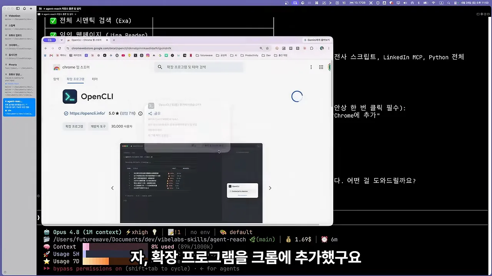
X에서 반응 모으기: 막혔다 뚫리는 과정
첫 시험은 X에서 요즘 루프 엔지니어링의 반응 모아줘예요. 화면에는 클로드 코드가 Skill(agent-reach)를 불러온 뒤, 규칙에 따라 Twitter 백엔드 상태와 social.md의 재시도 체인을 읽겠다는 줄이 보여요. 화자는 공식 API는 비싸고, 크롬으로 한 사이트에 들어가는 방식만으로는 전체 플랫폼을 뒤지기 어렵다고 설명해요.
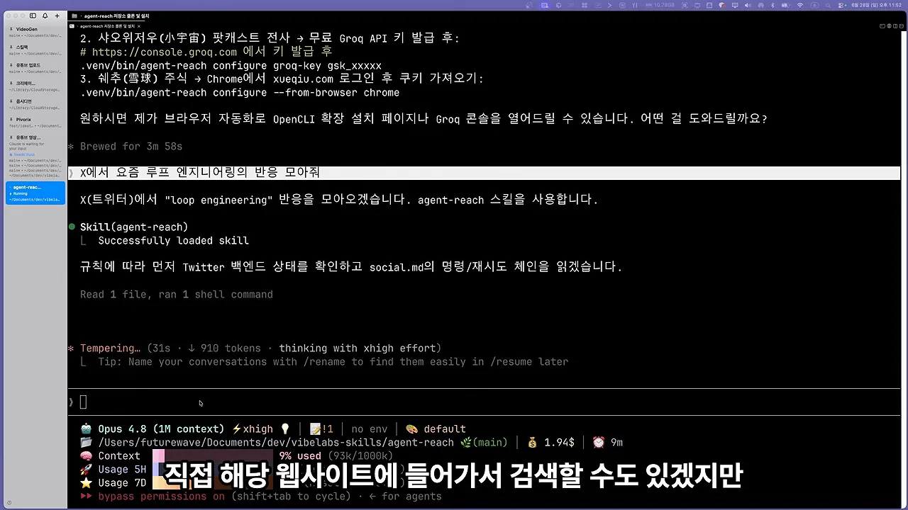
막혔다가 뚫리기까지
여기가 이 영상에서 가장 배울 게 많은 구간이에요. 검색은 한 번에 되지 않았어요. 아래 화면 맨 위 줄이 404를 받은 순간이고, 이유로 Twitter가 GraphQL 엔드포인트를 자주 바꾼다는 점을 들어요. 그 아래로 재시도 체인 단계가 차례로 나와요. 화면 맨 아래 입력창에서는 화자가 OpenCLI를 입력하고 있어요.
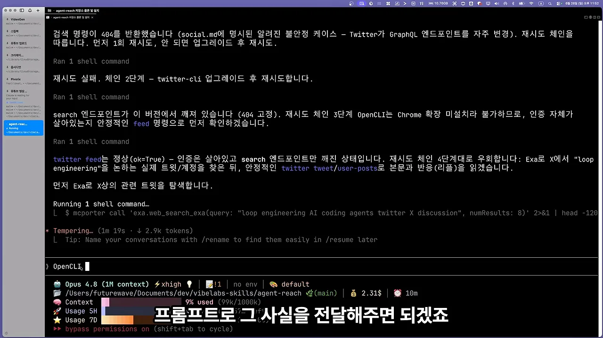
전체 흐름을 그림 한 장으로 옮기면 이렇게 돼요. 위 줄이 자동으로 간 길이고, 오른쪽 아래에서 사람이 끼어들어요.
화자는 이런 경우 프롬프트로 사실을 전달해 주면 된다고 말해요. OpenCLI 설치완료됐어를 보내자 클로드 코드가 브라우저를 열어요. 왼쪽이 로그인된 X 홈, 오른쪽의 빈 창은 탭 그룹 이름이 'OpenCLI Browser'예요.
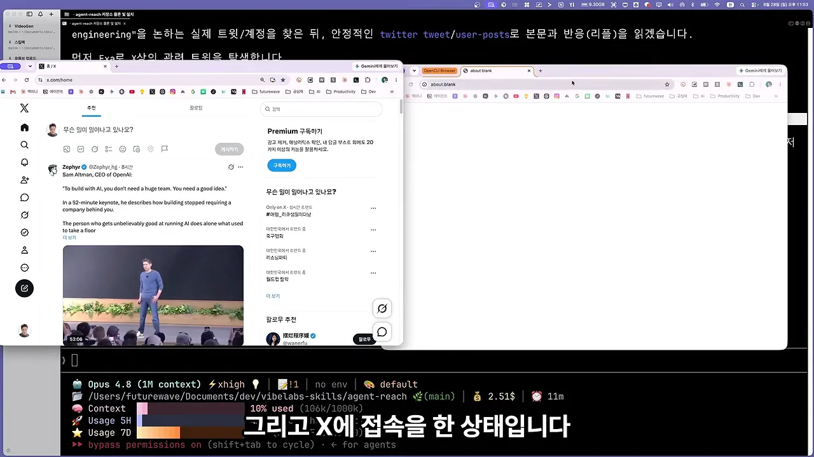
데몬을 재시작한 뒤 연결이 확인돼요. 화면의 Daemon OK, Extension connected, Connectivity OK가 그 표시이고, 아래 회색 글자의 opencli twitter search가 실제로 실행한 명령이에요. 결과를 JSON(JavaScript Object Notation) 파일로 저장하고 핵심 트윗의 리플라이까지 읽으러 가요.
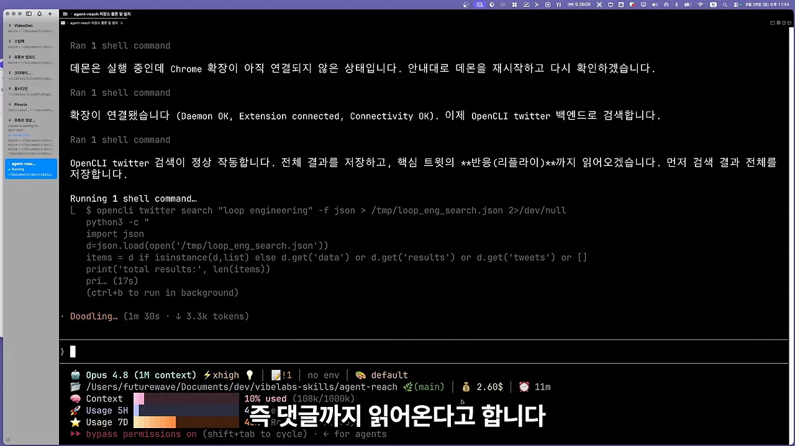
무엇을 가져왔나요
결과 첫 문단에 작업량이 적혀 있어요. 검색 15건과 핵심 스레드 5개의 리플라이 240여 건을 분석했어요. '무엇이 불을 붙였나' 항목에는 Peter Steinberger의 6월 8일 트윗, Boris Cherny의 의견, 이 말을 용어로 정리한 Addy Osmani가 나와요.
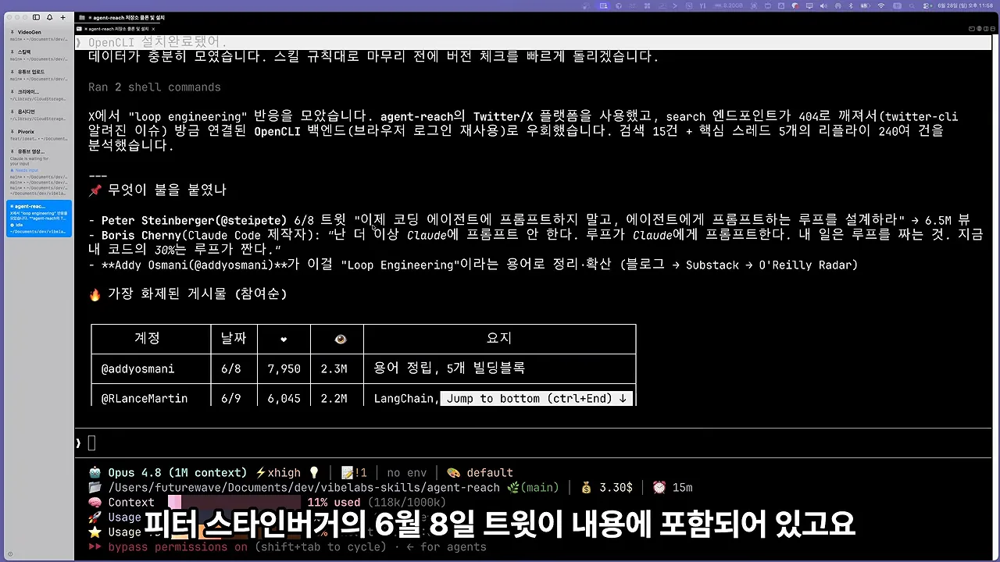
그 아래 표는 화제가 된 계정 6개를 좋아요와 조회수로 정리해요. 눈 아이콘 열의 11.1M이 가장 높아요. 그래서 @AnatoliKopadze 줄의 요지가 '최대 도달'이에요.
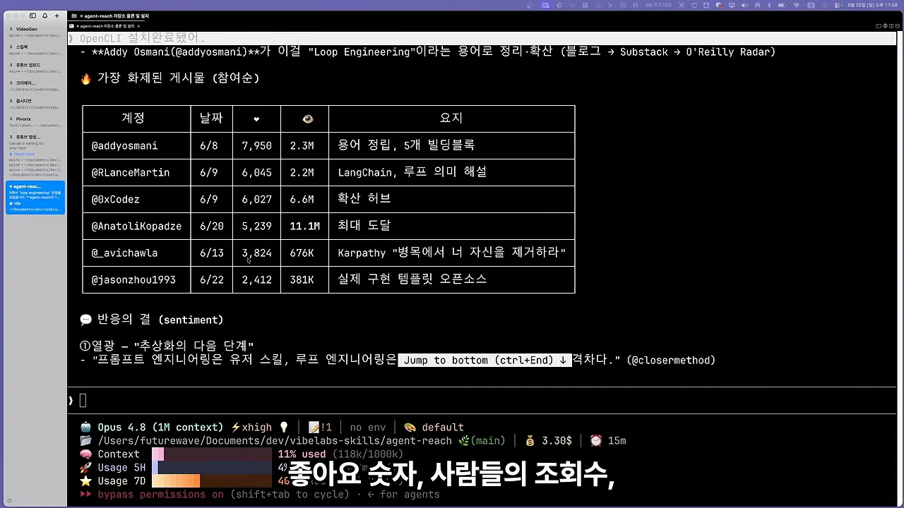
반응의 결은 번호를 붙여 나뉘어요. ① 열광, ② 핵심은 검증(verification)이라는 의견, ③ 비용·토큰 폭탄이라는 회의가 아래 화면에 보여요.
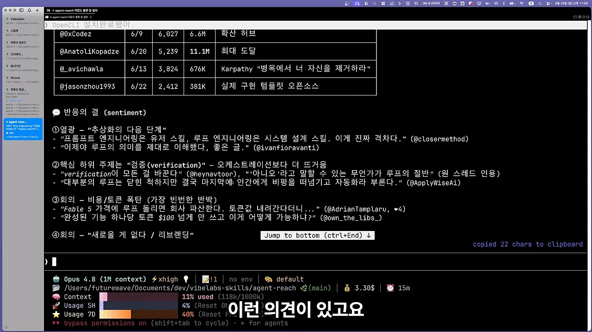
스크롤을 내리면 ④ 새로울 게 없다, ⑤ 무엇을 만들지는 누가 정하나가 이어져요. 화자가 말로 건너뛴 ⑥ 가짜 정보 경고도 보여요. '11페이지 Loop Engineering PDF를 Anthropic 시니어 엔지니어가 공개했다'는 트윗이 가짜라는 지적이에요.
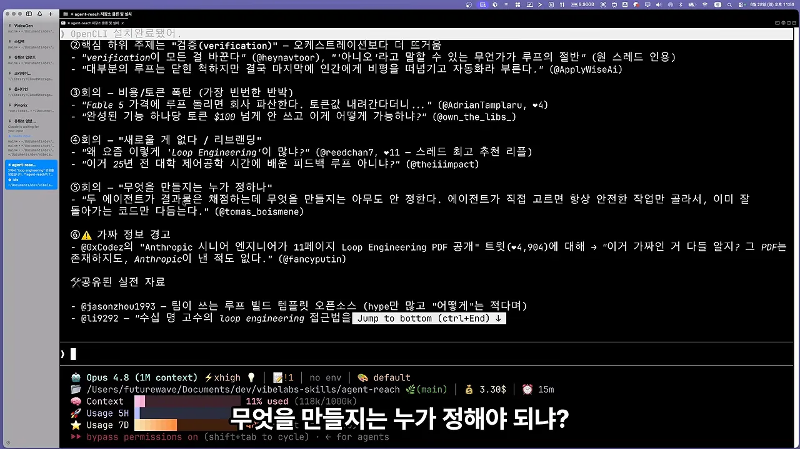
유튜브 자막과 깃허브 레포 읽기
다음 두 데모는 훨씬 순조로워요. 앞의 X 데모까지 묶어서 보면 구조는 같아요. 평범한 문장으로 요청하면 스킬이 채널을 고르고, 채널마다 정해진 도구가 실제 일을 해요.
유튜브 영상을 자막으로 읽기
유튜브 링크와 함께 이 영상 자막 뽑아서 핵심 세 가지로 정리해줘를 보내요. 화면에는 YouTube 플랫폼 · yt-dlp 백엔드라는 줄과 함께 자막을 추출하는 명령이 돌아가요.
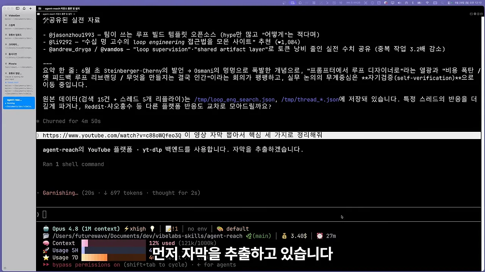
결과 맨 위에 자막(8,838단어, 42분)이 나오고, 영상 정보에 'BZCF' 채널의 앤트로픽 풀다큐 번역이라고 적혀 있어요. 화자 설명대로라면 영어 자막을 받아 정리한 거예요. 그 아래가 첫째 요점 '안전을 외치는 회사의 역설'이에요.
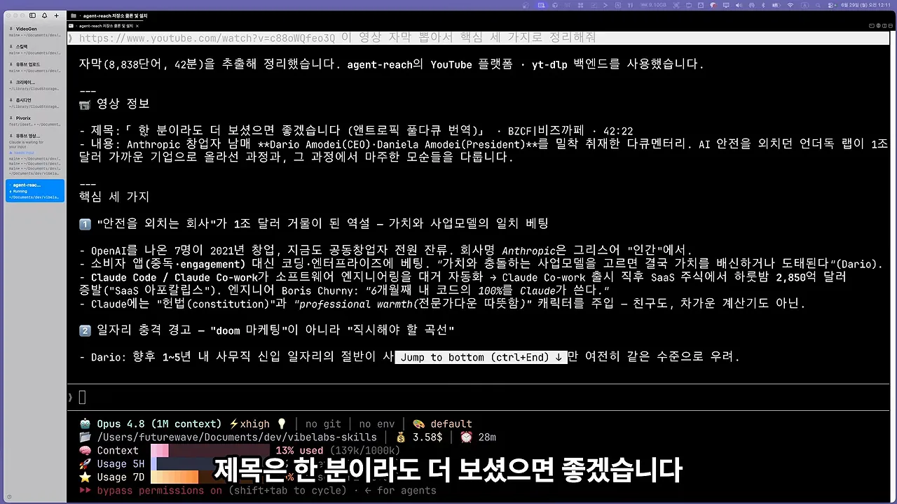
둘째, 셋째 요점도 같은 식이에요. 숫자가 박힌 ②번 첫 줄의 사무직 신입 일자리 경고와, ③번의 펜타곤 충돌과 Mythos가 화자가 짚은 부분이에요. 다만 이건 Agent Reach의 시연 결과물이에요. 이 문서에서는 내용을 따로 검증하지 않았어요.
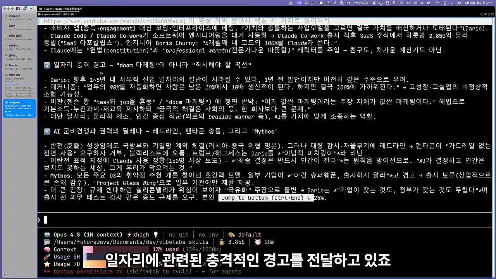
깃허브 레포 파악하기
이번엔 이 레포 뭐 하는 건지, 최근 변경점만 정리해줘예요. 화면의 GitHub 플랫폼 · gh CLI 백엔드 줄 아래에 최근 커밋과 릴리스, 이슈를 한 번에 조회하는 명령이 보여요.
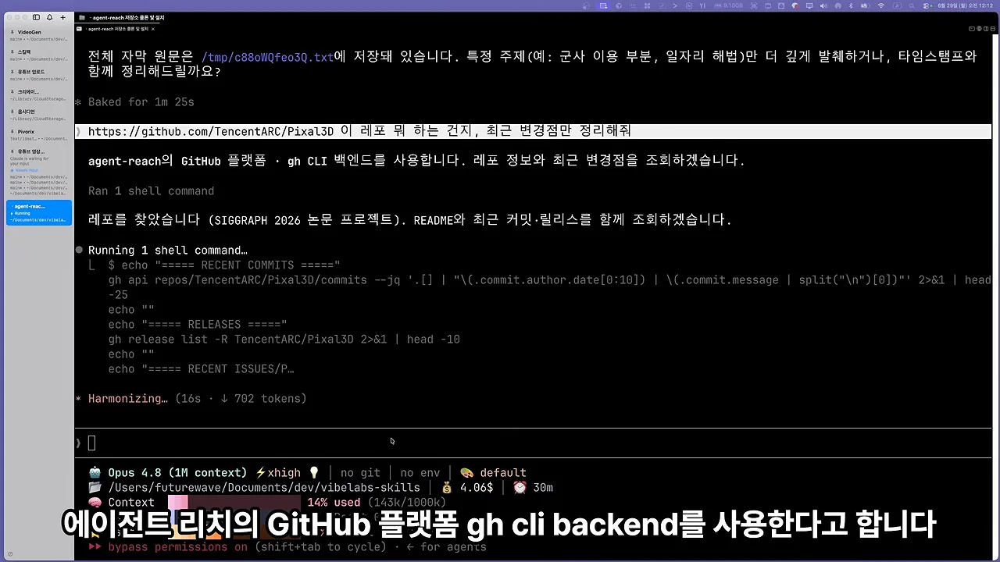
'무엇을 하는 레포인가' 답은 첫 줄로 끝나요. 이미지 한 장에서 고품질 3D 에셋을 만드는 모델이고 SIGGRAPH(Special Interest Group on Computer Graphics and Interactive Techniques) 2026 논문의 공식 구현체예요. 그 아래 소속, 핵심 차별점, 라이선스, 스타 수, 브랜치 2개까지 정리돼 있어요.
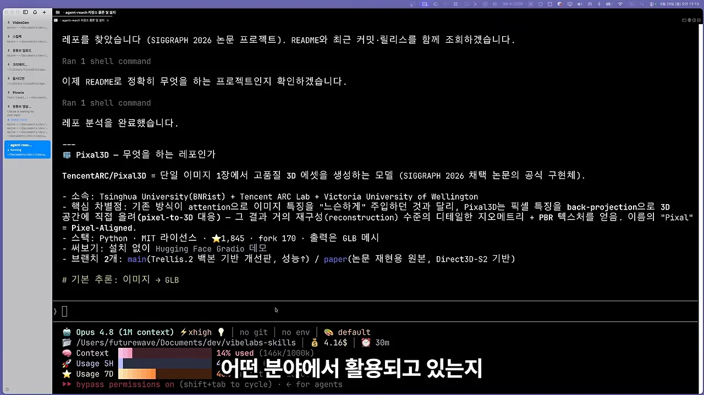
최근 변경점은 feat, fix, docs로 묶여 있어요. 5월 17일의 학습 파이프라인 공개에 '가장 큰 변화'라고 표시돼 있고, 맨 아래에는 멀티뷰 체크포인트 요청처럼 커뮤니티가 겪는 이슈가 번호와 함께 나와요.
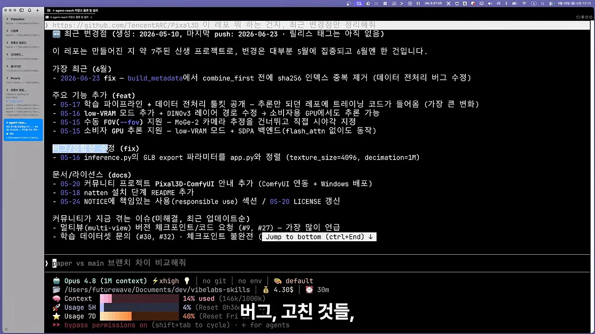
어디에 쓸까, 왜 통로가 여러 개일까
화자는 네 가지 쓰임을 예로 들어요. 프롬프트는 영상에서 말한 문장을 조금 다듬어 옮겼어요. 슬라이드의 빨간 에러 창이 첫째 상황이에요. Cannot read properties of undefined 같은 메시지를 사람이 복사해 찾던 일을 맡기는 거예요.
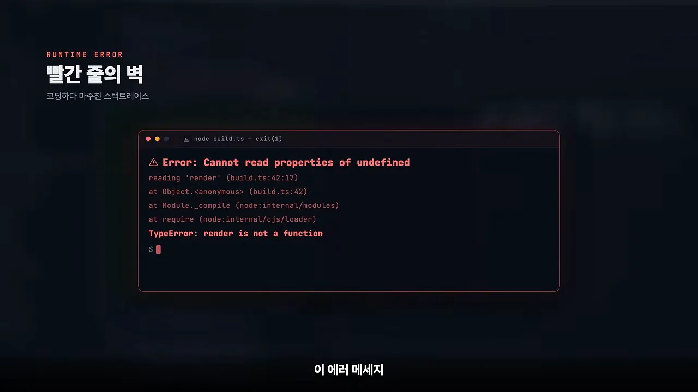
| 상황 | 맡기는 말 | 읽는 곳 |
|---|---|---|
| 코딩 중 에러 | 이 에러 메시지, 같은 사례를 찾아 해결책을 정리해 줘 | 레딧, 깃허브 이슈 |
| 문서가 부실한 라이브러리 | 최근 이슈를 검색하고 PR(Pull Request)을 읽고 이 기능의 사용법을 정리해 줘 | 깃허브 |
| 영어 공식 문서 | 이 페이지에서 중요한 부분만 한국어로 번역해 줘 | 일반 웹페이지 |
| 콘텐츠 기획 | 이 주제가 요즘 어떻게 회자되는지 찾아 줘 | X, 유튜브 |
화자가 네 가지에서 뽑은 공통점은 에이전트가 세상을 재료로 쓰기 시작했다는 거예요. 머릿속 작년치 지식만 우려먹지 않는다는 뜻이죠.
왜 통로가 여러 개여야 할까요
마지막으로 셀프 힐링 라우터를 다시 꺼내요. 아래 슬라이드처럼 플랫폼마다 벽이 있고, 자물쇠에 막힌 신호가 오른쪽으로 계속 부딪혀요. 플랫폼은 자동 접근을 자주 막아서, 오늘 되던 게 내일 안 될 수 있어요. 보통 도구면 거기서 멈추지만 Agent Reach는 여러 통로로 갈아탄다는 설명이에요.
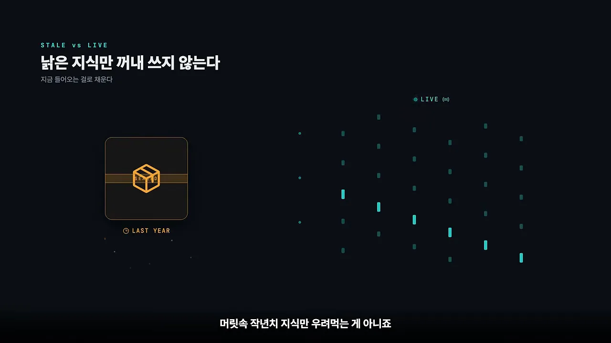
끝맺음은 비유예요.
똑똑하지만 책상 앞에만 앉아 있던 녀석에게 밖에 나가서 직접 보고 오라고 문을 하나 달아준 셈이죠.
— 영상 12:50
화자 자신은 에이전트에게 자기 채널 댓글부터 읽어 오게 시켜 보겠다며, 조금 무섭긴 하다고 덧붙여요.